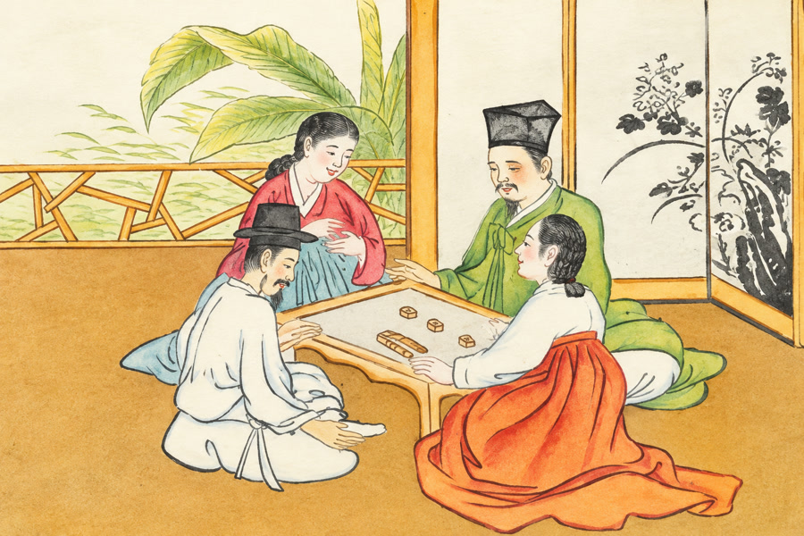

풍속화 속 한국
그림으로 만나는 조선의 하루
놀이와 일, 음식과 살림. 한 획씩 그리는 열 편의 이야기로 조선의 하루를 만납니다.
한 편 1분 6초 · 세 언어로 만나는 열 편
선택한 언어로 10편 저장
어떤 하루부터 볼까요?
마음에 드는 그림을 고르면 다음 이야기로 이어집니다.
그림을 불러오고 있습니다.
찾는 그림이 없습니다.
다른 말로 찾아보거나 전체 목록을 열어 보세요.
풍속화 속 한국
놀이와 일, 음식과 살림. 한 획씩 그리는 열 편의 이야기로 조선의 하루를 만납니다.
한 편 1분 6초 · 세 언어로 만나는 열 편
선택한 언어로 10편 저장
마음에 드는 그림을 고르면 다음 이야기로 이어집니다.
그림을 불러오고 있습니다.
다른 말로 찾아보거나 전체 목록을 열어 보세요.